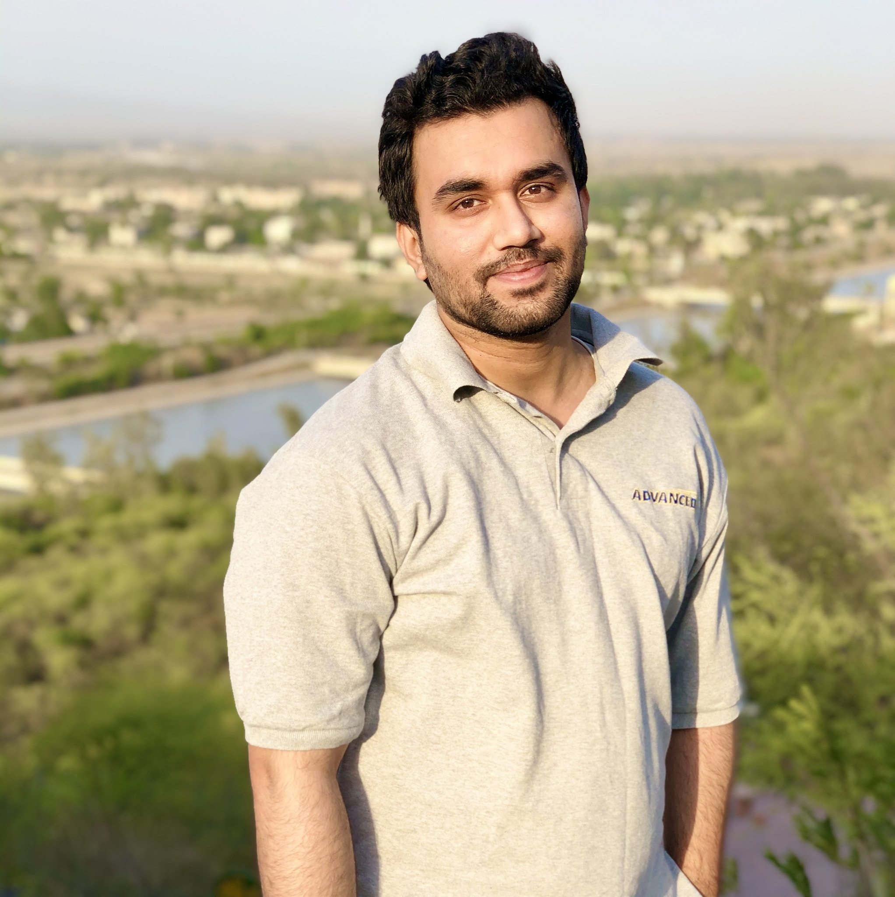

Waqas Ahmed

Summary
Hi, I'm Waqas Ahmed, a dynamic Full Stack Web developer with a Bachelor's degree in Software Engineering and 5+ years of experience in the industry. I've partnered with industry leaders like CareCloud, Ejada Systems, Halliburton, and Clarivate, honing my skills in Web front-end and back-end development using technologies like Java, Spring Boot, Hibernate, Microservices, Databases like Postgresql, Oracle, MySql, MongoDB, HTML, CSS, JavaScript, Angular. My passion lies in crafting efficient solutions, whether it's backend or front end web or desktop apps development or fine-tuning databases or creating automation scripts or bots.
Education
- Bachelor's in Software Engineering - International Islamic University, Islamabad.
Work Experience
-
Senior Software Engineer - Clarivate
June 2022 - Present
Working as a backend engineer for Clarivate which is a British-American publicly traded
analytics company that operates a collection of subscription-based services in a variety
of domains.My primary responsibility is creation of REST Apis and services to handle
backend of a variety of applications using below technologies.
Technology Stack
- Java
- Spring Boot
- PostgreSQL
- Spring Data JPA (Hibernate)
- AWS SQS Queues
- AWS S3
- Microservices
- Junit and Mockito
-
Software Engineer - CareCloud
December 2020 - August 2022
Worked in the Healthcare IT Industry on Electronic Health Record Applications as a Software
Engineer. Worked on both the frontend and backend side of the applications but my major
responsibility was to handle backend and databases.
Technology Stack
- Java
- Spring Boot
- PostgreSQL
- Spring Data JPA (Hibernate)
- Orchestration (Netflix Conductor)
- BPMN using Alfresco
- Fast Healthcare Interoperability Resources (FHIR)
- Microservices
- Junit and Mockito
-
Java Developer - Saufik
November 2019 - November 2020
- Designed, developed, and implemented software applications for websites based on analyzed
requirements and understanding of industry technical standards.
- Participated in a complete software development lifecycle, including performance analysis, design,
development, and testing.
- Developed automation testing applications using selenium and Appium for web and mobile applications using
spring boot framework with hibernate.
- Utilized knowledge of Sprint Boot, Hibernate and SQL to supplement Java development
- Worked with a quality assurance team to set up scripts, test cases and automation protocols.
- Reviewed code and debugged errors to improve performance.
-
Android Applications Developer - Capital Brand Technologies
July 2019 - October 2019
- Worked on android applications using Java as the primary language for development
- Experienced working between numerous devices and versions of Android.
- Provided code maintenance and system upgrades to maximize performance.
- Designed user interfaces that engaged multiple senses and produced immersive experiences
Skills
- Java ⭐️⭐️⭐️⭐️⭐️
- Spring Boot ⭐️⭐️⭐️⭐️⭐️
- Relational Databases ⭐️⭐️⭐️⭐️⭐️
- Non-Relational Databases ⭐️⭐️⭐️⭐️
- Microservices ⭐️⭐️⭐️⭐️
- Unit Testing ⭐️⭐️⭐️⭐️⭐️
- HTML ⭐️⭐️⭐️⭐️⭐️
- CSS ⭐️⭐️⭐️⭐️
- JavaScript ⭐️⭐️⭐️
- Angular ⭐️⭐️
Other